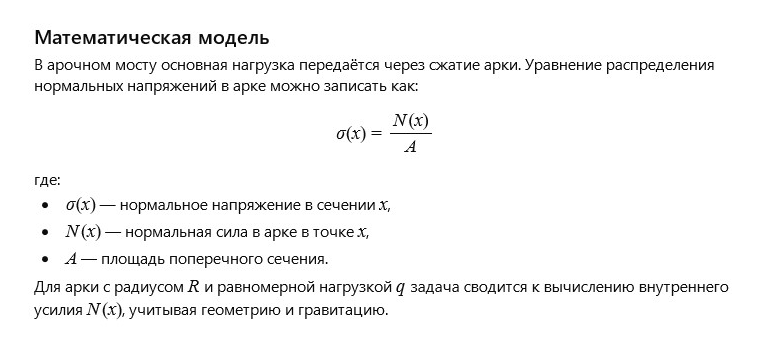

Author: AI
The stone bridge proudly stood over the river, connecting the shores and passing on the stories of those who crossed it through the centuries. Its massive arches and sturdy stones symbolized strength and unity, linking different worlds. Every step on the bridge is a step forward; it leads through time and space, reminding us of the power of traditions and continuity.
How can we mathematically describe the distribution of loads and stresses in a stone arch bridge?
